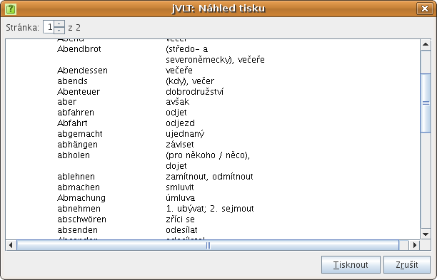
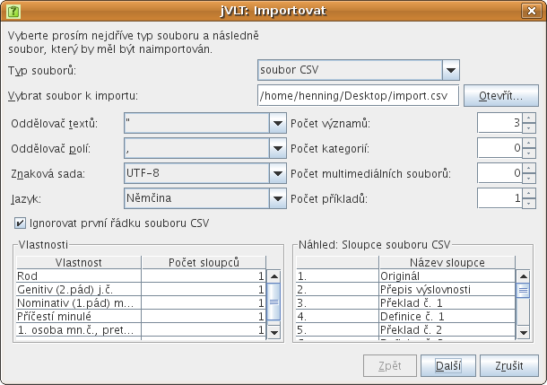
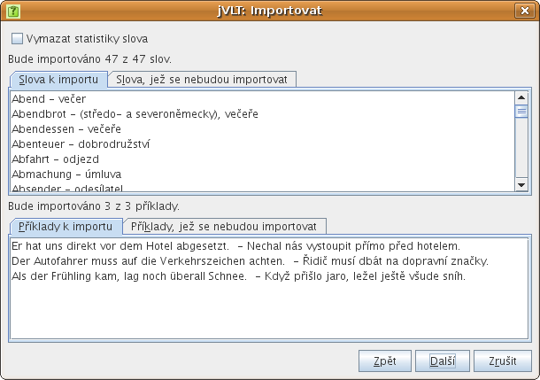
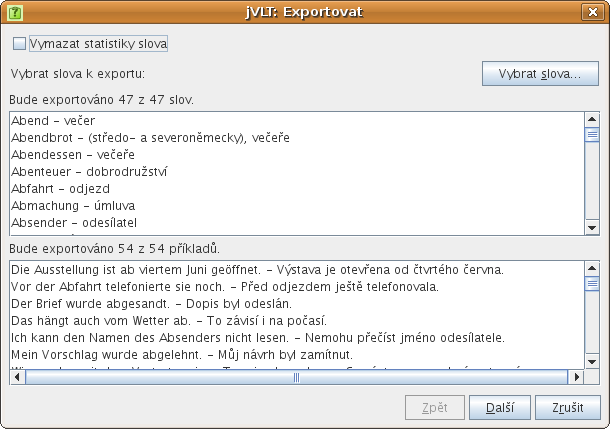
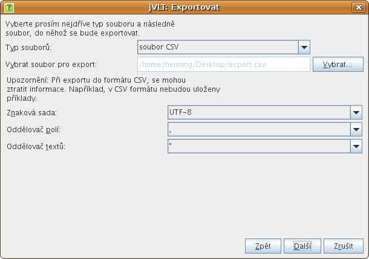

jVLT – nástroj pro učení se slovíček
Různé
Tisk
jVLT vám umožňuje vytisknout si slova z vašeho souboru se slovíčky. Můžete tisknout buď přímo zvolením položky „Vytisknout...“ z nabídky „Soubor“, anebo po kontrole náhledu zvolením položky „Náhled tisku“ ze stejné nabídky. Nechcete-li tisknout všechna slova, můžete si použitím filtrů v seznamu slov udělat výběr. To, které sloupce se vytisknou, závisí na sloupcích vybraných pro seznam slov a zrovna tak šířky sloupců závisejí na šířkách sloupců seznamu slov. V dialogu předvoleb si můžete vybrat písmo, které se bude používat pro tisk.
Importování slovníků
Slovníky můžete importovat buď ze souborů ve formátu jVLT, nebo v souborovém formátu CSV (comma separated values – čárkou oddělené hodnoty), a to zvolením položky „Importovat...“ z nabídky „Soubor“. Soubory CSV lze vytvořit v tabulkovém procesoru, například OpenOffice.org Calc.V importovacím dialogu nejdříve vyberete typ souboru, který se má importovat. Následně se stisknutím tlačítka s popiskem „Otevřít...“ vybere konkrétní soubor. Vyberete-li jako typ souboru "soubor CSV", zviditelní se další nastavení, která jsou popsána níže.
- Oddělovač textů: Znak oddělující textové hodnoty v souboru CSV. Předvoleným standardem je anglická dvojitá uvozovka (").
- Oddělovač polí: Znak oddělující pole v souboru CSV. Předvoleným standardem je čárka (,).
- Znaková sada: Znaková sada souboru CSV. Předvoleným standardem je UTF-8.
- Jazyk: Podporuje-li jVLT jazyk vašich slovíček, můžete ho nastavit zde. Některé jazyky mají další vlastnosti, které lze vybrat v tabulce vlastností.
- Ignorovat první řádku: Má-li váš soubor CSV řádku fungující jako hlavička, měli byste toto políčko zaškrtnout.
- Počet významů: Toto nastavení určuje, kolik sloupců je použito pro významy. Pro každý význam jsou dva sloupce, jeden pro překlad a jeden pro definici. Každé slovo musí mít nejméně jeden význam, který musí obsahovat buď překlad, anebo definici (nebo obojí).
- Počet kategorií: Počet sloupců pro kategorie. Kategorie může být libovolný textový řetězec.
- Počet multimediálních souborů: Počet sloupců pro multimediální soubory. Multimediální soubor lze zadat buď s absolutní, anebo relativní cestou. Relativní cesta určuje umístění multimediálního souboru ve vztahu k souboru se slovíčky.
-
Počet příkladů:
Toto nastavení určuje, kolik sloupců je použito pro příklady. Každý příklad
má tři sloupce. První obsahuje text příkladu a třetí (volitelně) překlad.
Druhý sloupec obsahuje odkaz na význam ve formátu
„odkazované slovo;číslo významu“, „odkazované slovo“
nebo „číslo významu“ – může být i prázdný. Standardně se
používá původní heslo a číslo „1“. Viz následující vzorová
tabulka:
Originál Výslovnost 1. překl. 1. def. 2. překl. 2. def. Test příkladu Odkaz. význam Překl. příkladu warten čekat provádět údržbu Das Flugzeug wird gerade gewartet. gewartet;2 gehen jít Wir gehen ins Theater.
Slovo „warten“ je ve vzorové větě v trpném rodě. Proto musí být v druhém sloupci příkladu tato podoba, „gewartet“, uvedena. Protože v příkladu je použit druhý význam slova, následuje po středníku v tomto sloupci číslo „2“. Druhý příklad je snazší: Pro slovo „gehen“ byl zadán pouze jeden význam a toto slovo není ve vzorové větě v odlišném tvaru, a tak druhý sloupec příkladu může být prázdný. - Vlastnosti: Jestliže byl zadán jazyk, mohou zde být charakteristické vlastnosti. Tyto vlastnosti lze přidávat kliknutím na buňku v prvním sloupci a poslední řádce tabulky a následným vybráním vlastnosti z rozbalovacího seznamu. Odstranit vlastnost můžete vybráním prázdné položky v rozbalovacím seznamu. Většina vlastností má pouze jeden sloupec. Pokud vlastnost tvoří seznam hodnot, lze počet sloupců přizpůsobit.

Poté, co stisknete tlačítko „Další“, se zobrazí slova a příklady, které se budou importovat. Pod nimi budou další dva seznamy, a to slov a příkladů, které se importovat nebudou, protože už jsou ve slovníku obsaženy. Budete-li chtít, můžete zaškrtnutím příslušného políčka v horní části dialogu smazat statistiky (naposledy v kvízu, počet chyb atd.). Import se uskuteční po stisknutí tlačítka „Dokončit“.

Exportování
Právě aktivní slovník nebo jeho část můžete exportovat do souboru ve formátu jVLT, CSV (comma separated values – čárkou oddělené hodnoty) nebo HTML, a to prostřednictvím dialogu, který se otevře po zvolení položky „Exportovat...“ z nabídky „Soubor“.V exportním dialogu nejdříve vyberete stisknutím tlačítka „Vybrat slova...“ slovíčka, která by měla být exportována. Dialog, který se následně otevře, je tentýž jako onen popsaný v oddíle kvíz. Stejně jako při importování slovíček je možné resetovat statistiky slov.

Poté, co stisknete tlačítko „Další“, se objeví nový panel, který vám umožní vybrat typ souboru a soubor, do kterého se bude exportovat. Vezměte na vědomí, že pokud za typ souboru vyberete CSV, pravděpodobně ne všechny informace budou uloženy. Pro dokončení exportu stiskněte „Dokončit“.